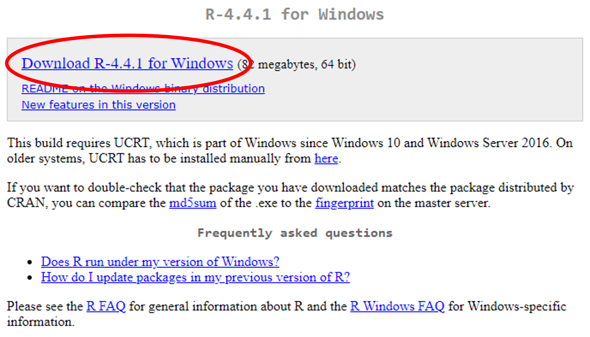
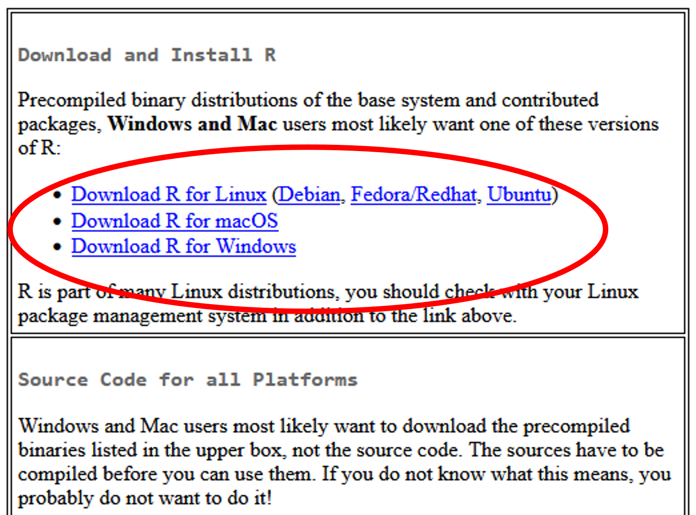
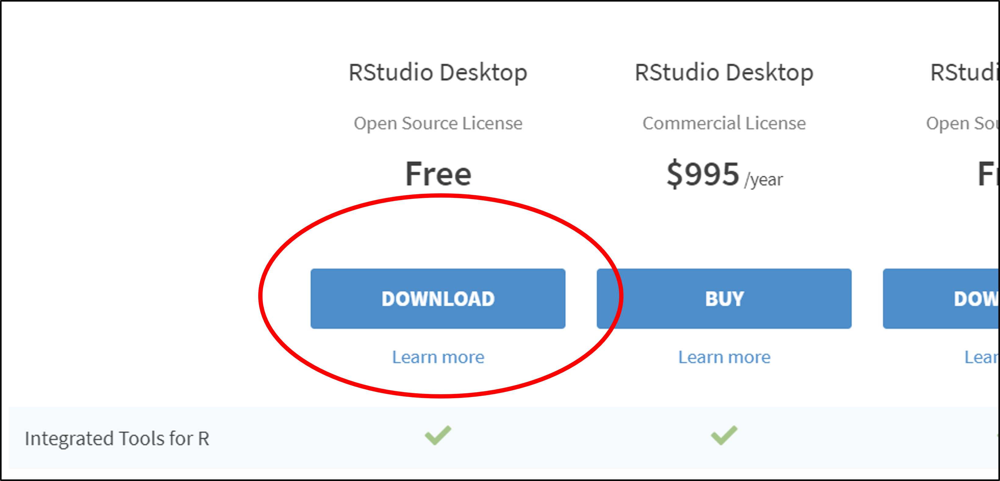

3 Downloading R and RStudio
3.1 Introduction
This is the first document in our “First Steps in R” series of resources.
R is a programming language specifically designed for doing statistics. The R software can be downloaded on its own but it is more usual to download both R and RStudio. RStudio is a more convenient way of interacting R. The R software must be installed before RStudio will work.
3.2 Downloading R for Windows (do this first, before downloading RStudio)
R can be downloaded from CRAN (the Comprehensive R Archive Network).
Click “Download R-4.4.1 for Windows”.

When the file has downloaded, open it just as you would when installing any other new program.
We would recommend you agree with the default settings and perhaps consider clicking the boxes to add a desktop shortcut and a Quick Launch shortcut.
3.3 Downloading R for other operating systems
Go to CRAN (the Comprehensive R Archive Network). Select the appropriate operating system from the options given then download the latest release from the following page.

3.4 Downloading RStudio (you will need to download R first to enable RStudio to work)
Go to R Studio.
Scroll down a little and choose the free version of RStudio and click “Download.”

Click “Download RStudio for Windows” (or select your operating system from the list a little further down).
Again, open the file just as you would when installing any other new program and select the default options.